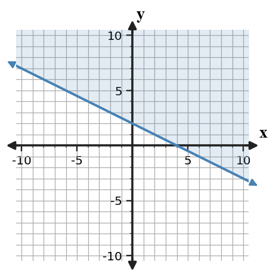

- Work Alone (5 min): Skim every problem you can, then start solving any problem you can. Leave anything you’re stuck on blank for now.
- Find a Partner: Walk around and find someone who is ready to share. Compare your completed answers — discuss any that don’t match.
- Work Together (5 min): Choose one problem that either of you left blank. Work through it together. Both partners record the solution on their own sheet.
- Find Someone New: Thank your partner and repeat steps 2–3 with a different person each time.
- Return to your seat with every problem completed and understood — not just filled in.
- Students attempt several problems alone before moving.
- Partners compare completed answers and then collaborate on one unfinished item.
- Students leave each partner with a recorded solution they understand.
- Students walk immediately without any independent attempt.
- Partners fill blanks without explaining the method.
- Students collect answers from one person and stop rotating.
Use the graph to name the x-intercepts and decide whether the vertex is above or below the x-axis.

Use the graph to name the x-intercepts and decide whether the vertex is above or below the x-axis.
The graph is $y=x^2+x-6=(x+3)(x-2)$, so the x-intercepts are $(-3,0)$ and $(2,0)$.
The vertex is below the x-axis.
Factor $y=2x^2+6x+4$ and use the factored form to identify the x-intercepts.
Factor $y=2x^2+6x+4$ and use the factored form to identify the x-intercepts.
$2x^2+6x+4=2(x^2+3x+2)=2(x+1)(x+2)$.
The x-intercepts are $x=-1$ and $x=-2$.
A student says the zeros of $y=(x-4)(x+7)$ are $4$ and $7$ because those are the numbers in the factors.
Critique the reasoning and write a corrected explanation.
A student says the zeros of $y=(x-4)(x+7)$ are $4$ and $7$ because those are the numbers in the factors.
Critique the reasoning and write a corrected explanation.
The zero of a factor is the value that makes that factor equal $0$.
For $x-4=0$, $x=4$. For $x+7=0$, $x=-7$. The corrected zeros are $4$ and $-7$.
Create a factored quadratic model for a situation where an object starts on the ground, rises, and returns to the ground after $6$ seconds. Include the equation, the zeros, and a sentence interpreting the zeros.
Create a factored quadratic model for a situation where an object starts on the ground, rises, and returns to the ground after $6$ seconds. Include the equation, the zeros, and a sentence interpreting the zeros.
One model is $h(t)=-t(t-6)$.
The zeros are $t=0$ and $t=6$. They mean the object starts on the ground at $0$ seconds and returns to the ground after $6$ seconds. The negative leading coefficient makes the object rise then fall.
What does a negative number of tickets in a solution usually tell you about the context?
What does a negative number of tickets in a solution usually tell you about the context?
A negative number of tickets usually means the mathematical solution is not reasonable in the context, so the model or interpretation should be checked.
Why can a graphing check help after solving a system from a context?
Why can a graphing check help after solving a system from a context?
A graphing check helps confirm that the algebraic solution has the right intersection and makes sense in the context, including units and feasible values.
For two phone plans, what would the intersection point of their cost graphs represent?
For two phone plans, what would the intersection point of their cost graphs represent?
The intersection point represents the number of minutes/items/months where both phone plans cost the same, and the corresponding cost.
The graph shows a linear inequality. Identify the boundary type and write one possible inequality represented by the graph.

The graph shows a linear inequality. Identify the boundary type and write one possible inequality represented by the graph.
The boundary is solid because the graphed inequality is inclusive. One possible inequality is $y\ge -\frac{1}{2}x+2$.
Use the displayed shaded region to write one test point that satisfies the inequality and one that does not. Then explain how you know each point belongs in its category.

Use the displayed shaded region to write one test point that satisfies the inequality and one that does not. Then explain how you know each point belongs in its category.
The boundary is dashed and the region is below $y=2x-1$, so one satisfying point is $(0,-2)$ and one non-satisfying point is $(0,2)$.
Check: $-2\lt -1$ is true, while $2\lt -1$ is false.
Decide whether each point is a solution to $y\ge -x+2$.
| Point | $(0,0)$ | $(2,1)$ | $(-1,5)$ |
|---|---|---|---|
| Solution? |
Decide whether each point is a solution to $y\ge -x+2$.
| Point | $(0,0)$ | $(2,1)$ | $(-1,5)$ |
|---|---|---|---|
| Solution? |
- $(0,0)$: $0\ge2$ is false, so no.
- $(2,1)$: $1\ge0$ is true, so yes.
- $(-1,5)$: $5\ge3$ is true, so yes.
Estimate the solution before solving: $y=0.5x+1$ and $y=-x+10$. Explain why your estimate should have $x$ between $5$ and $7$, then solve by substitution to verify.
Estimate the solution before solving: $y=0.5x+1$ and $y=-x+10$. Explain why your estimate should have $x$ between $5$ and $7$, then solve by substitution to verify.
Estimate $x$ between $5$ and $7$ because at $x=5$, $0.5x+1=3.5$ and $-x+10=5$; at $x=7$, $0.5x+1=4.5$ and $-x+10=3$.
Solve: $0.5x+1=-x+10$, so $1.5x=9$, $x=6$, and $y=4$.
Create an inequality that could model this cafeteria constraint: a tray can hold at most 12 total apples and oranges. Let $a$ be apples and $o$ be oranges.
- Write a linear inequality.
- State what the boundary represents.
- List two feasible whole-number points and one non-feasible point.
Create an inequality that could model this cafeteria constraint: a tray can hold at most 12 total apples and oranges. Let $a$ be apples and $o$ be oranges.
- Write a linear inequality.
- State what the boundary represents.
- List two feasible whole-number points and one non-feasible point.
A model is $a+o\le 12$ with $a\ge0$ and $o\ge0$ for context.
The boundary $a+o=12$ represents a full tray.
Feasible whole-number points include $(6,6)$ and $(0,12)$. A non-feasible point is $(8,7)$ because $8+7=15>12$.
In $y=\frac{1}{3} x^2$, identify whether the graph is wider or narrower than $y=x^2$.
In $y=\frac{1}{3} x^2$, identify whether the graph is wider or narrower than $y=x^2$.
$y=\frac{1}{3}x^2$ is wider than $y=x^2$ because $0<\frac{1}{3}<1$ is a vertical shrink.
Write an equation for a translation of $y=|x|$ with vertex $(-4,6)$. Then explain how the equation shows the move.
Write an equation for a translation of $y=|x|$ with vertex $(-4,6)$. Then explain how the equation shows the move.
An equation is $y=|x+4|+6$.
The $x+4$ moves the vertex left $4$, and $+6$ moves it up $6$.
A student simplifies $(4x^2+3x-2)-(x^2-5x+6)$ as $3x^2-2x+4$. Critique the error and write the correct simplified expression.
A student simplifies $(4x^2+3x-2)-(x^2-5x+6)$ as $3x^2-2x+4$. Critique the error and write the correct simplified expression.
The error is failing to distribute the subtraction to every term in the second polynomial.
$(4x^2+3x-2)-(x^2-5x+6)=4x^2+3x-2-x^2+5x-6=3x^2+8x-8$.
Create a translated absolute value function that has vertex $(3, -2)$ and passes through a point with output $5$. Include the equation, two supporting points, and a short context where the vertex has meaning.
Create a translated absolute value function that has vertex $(3, -2)$ and passes through a point with output $5$. Include the equation, two supporting points, and a short context where the vertex has meaning.
One equation is $y=|x-3|-2$ with vertex $(3,-2)$.
To get output $5$, solve $|x-3|-2=5$, so $|x-3|=7$ and $x=10$ or $x=-4$. Supporting points include $(10,5)$ and $(-4,5)$.
Context: distance from a station at mile marker $3$ with a baseline value of $-2$.
For $f(x)=x(x-7)$, name both zeros.
Write one factor of a quadratic with zero $3$.
Complete: $x^2-16=(x-4)(\_\_\_)$.
Evaluate $y=-2x+9$ when $x=4$.
For $f(x)=x(x-7)$, name both zeros.
Write one factor of a quadratic with zero $3$.
Complete: $x^2-16=(x-4)(\_\_\_)$.
Evaluate $y=-2x+9$ when $x=4$.
The zeros are $0$ and $7$.
One factor is $x-3$.
$x^2-16=(x-4)(x+4)$.
$y=-2(4)+9=1$.